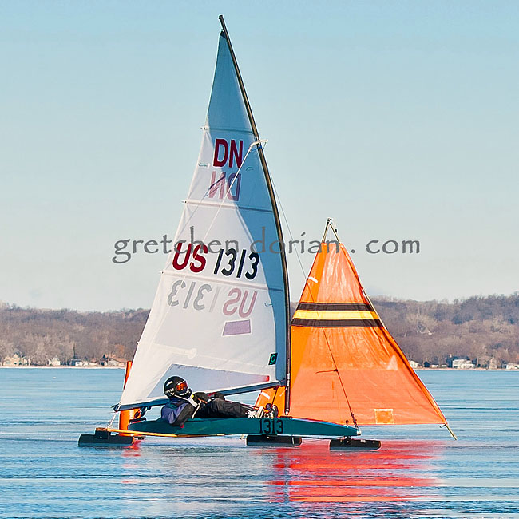

RKR Composites
DNCompositeMasts.com

Photo: Gretchen Dorian
Bob Rast sails his
Blackie
mast at the 2012 DN Western Region Championship Regatta on Green Lake in Minnesota.
Copyright 2012 RKR Composites - All Rights Reserved